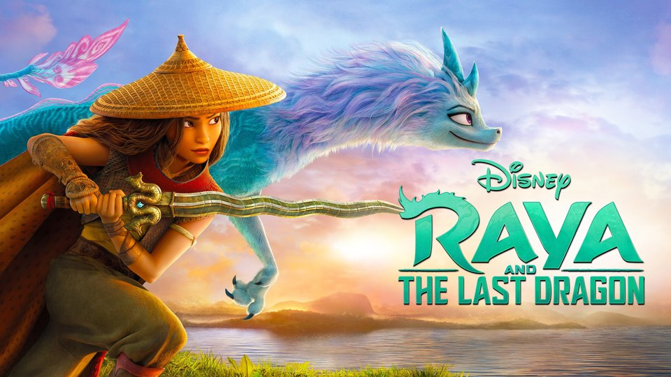
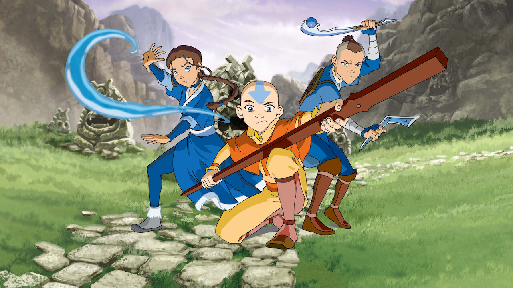
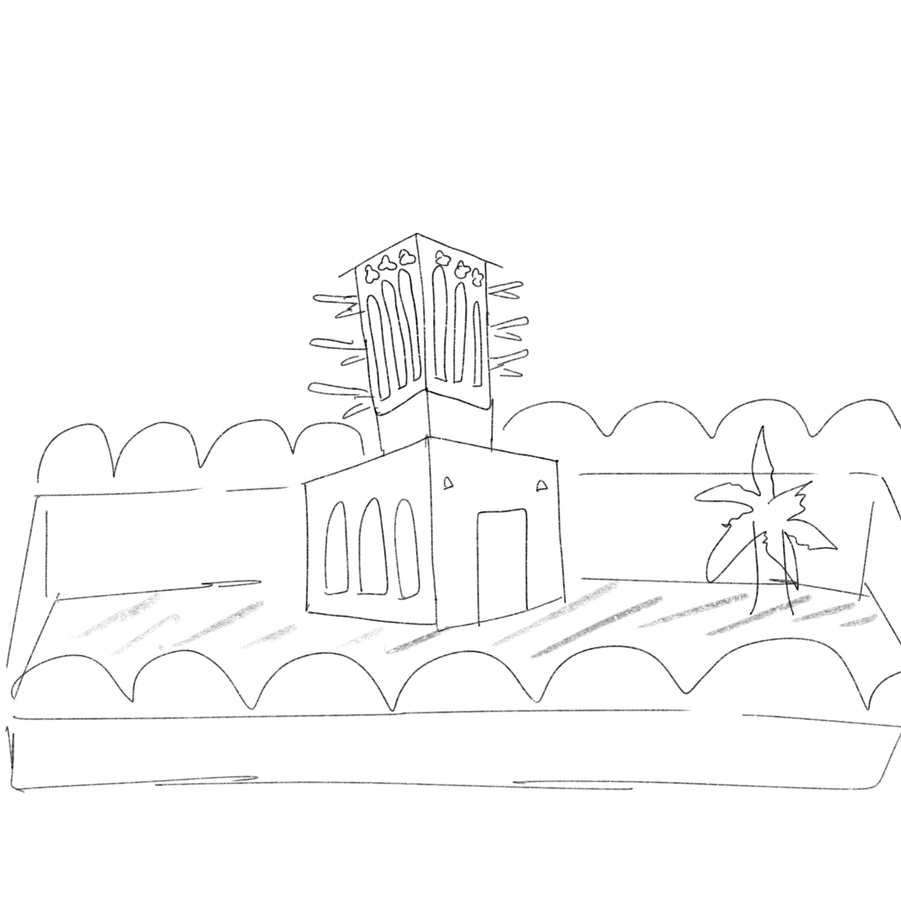
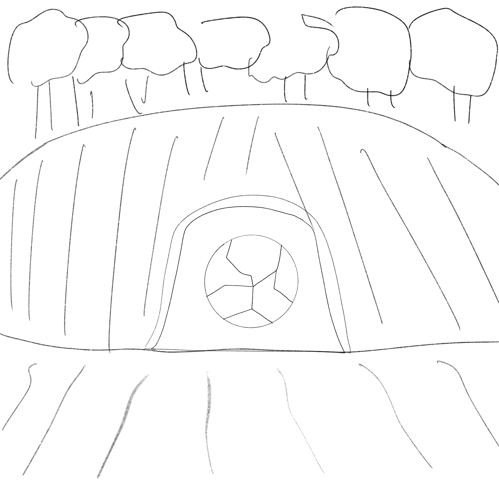
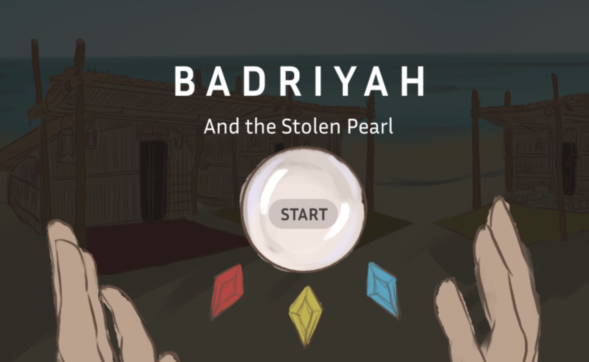
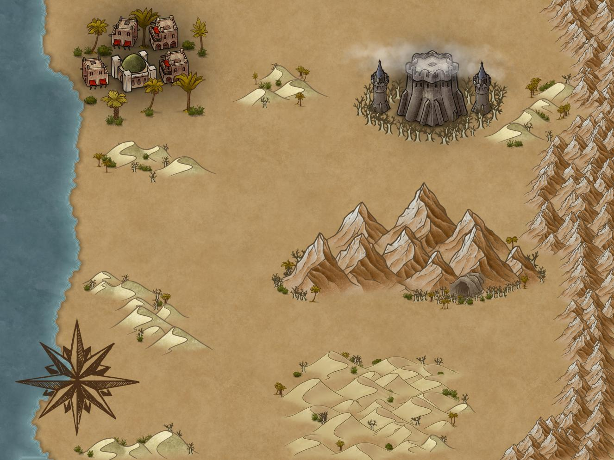

About
Deborah Agboola
Projects
Game Design, Level Design, Creative Lead, 3D Art
A 3D platformer action-adventure game about 12-year-old Emirati girl, Badriyah, who must goes on a journey to recover a magic pearl that the evil jinn stole from her village.
Badriyah and the Stolen Pearl is a 3D platformer action-adventure game about Badriyah, a 12-year-old Emirati girl whose village was raided by evil jinn. Over the course of the game, the player - who plays as Badriyah - must go on a journey to recover a magic pearl that was stolen during an invasion led by the powerful Umm Al Duwais.
This game was developed by myself alongside two other teammates: we participated in a game development incubator organised by Endless Studios. We were one of four teams in the UAE granted $12,000 to develop our game from scratch during a four-month internship.
During this internship, we also organised weekly livestreams on Youtube where we shared our game development process with young students and answered their questions. At the Canadian International School in Abu Dhabi, I volunteered to mentor a group of 20 high-school students who were curious about the gaming industry. By the end of the class, I helped all the students design their own Game Design Documents (GDD), and 80% of the students stated that they were interested in pursuing game development in higher education.
My main roles during this process were:
1) Project Manager:
a) Formed the team: after hearing about the opportunity to work with Endless Studios, I created a cross-functional team of designers, programmers and artists. Then, I scheduled multiple weekly meetings with my team and led brainstorming sessions that led to our successful pitch
b) Researched target audience: I designed a survey and distributed it to our target demographic (age 18 - 35), then used the collected data to inform our decisions and ensure that our game caters towards our audience
c) Managed the team: I oversaw the ideation and development of the game throughout the entire process, by organising several meetings every week, creating the agenda for each meeting and also maintaining consistent communication with our bosses at Endless Studios. I was also responsible for creating the project outline, delegating tasks and ensuring that deadlines were met
2) Creative Director:
a) Designed the story: I used my background in creative writing and film and new media to create a compelling story that our target audience would find intriguing. I led brainstorming sessions during meetings and incorporated all of our ideas into one story while maintaining consistency throughout. Our story is inspired by coming-of-age stories about young people such as Raya the Last Dragon and Avatar the Last Airbender. Since our game is set in ancient UAE, we had to conduct research on Emirati culture and folklore and draw inspiration from this. Our characters, story, music and art draws inspiration from Emirati culture.
 b) Chose the art style: after doing research on different art styles in 3D games and experimenting with colours, materials and 3D objects, we decided to choose two main art styles: semi-realistic-looking textures for the environmental assets and flat, toon-shaders for the characters so that they stand out
c) Conceptualised the levels: after creating the story, I took the lead of designing the levels and determining what the goal and layout of each would be. This included outlining the game mechanics and ensuring that the difficulty of each level was consistent and/or rising at a suitable level
3) 3D Art:
a) Designed the environmental assets: I used Maya and Blender to model all the environmental assets such as: Badriyah’s house, castle, cave, and desert. I also modelled some minor objects like Emirati-style kettles and teacups. The 3D characters were modelled by an art house that Endless Studios provided for us, while the other 3D assets were purchased online or downloaded for free. I also textured the 3D assets in Unity or using Substance Painter
b) Coordinated with team: Prior to modelling the 3D assets, I had to collaborate with my team to design the layout of each level, so that each environmental asset was designed with the levels in mind. I also met with our concept artist regularly to make sure that our vision was being brought to life through the 3D art
1) Creating the game design document: we collaborated to create a detailed game design document containing all information about our game, from the game mechanics to the user interface.
Download it here!
2) Story: we finalised the story as well as the scripts for every cut-scene
3) Concept art: my teammate was in charge of creating the concept art, but we collaborated as a team to conceptualise our characters and environments. Before I began modelling the environments, I quickly sketched what I envisioned them to look like on my iPad
 4) Level design: we outlined each level and determined what tasks the player would complete in each
5) Protoyping/greyboxing: my teammate and I collaborated to map out the levels and environment in Unity using simple geometrical 3D shapes
6) 3D art: Once concept art was completed, I began the 3D modelling process using Maya and Blender. The characters were modelled by an external art house
7) Programming: My teammate was the lead programmer for our project, and worked mostly on Unity. He coded every level except the puzzle scene (image found below), as I was more familiar with puzzle game mechanics
8) Cut scenes: my other teammate was the lead artist, and was responsible for drawing the 2D cut-scenes using Procreate. I have experience using editing software such as Davinci Resolve, so I assisted her in editing the 2D cut-scenes. The 3D cut-scenes were made using existing animations on Mixamo
9) Sound: the background music wrapped the game together. We used royalty-free Arabic-inspired music, which helped to tell the story further and immerse the audience into the experience
1) Immersive Storytelling
To create a fully immersive experience for the audience, we decided to use a combination of 2D and 3D cut-scenes to progress the story. Our unique selling point was that our game had a rich story that took inspiration from ancient Emirati folklore. We wanted the 2D cut-scenes to feel like the user was reading through pages of a storybook, hence the pencil-drawing/water-paint style of the art.
2) Toon-shaded Characters
One requirement that our game had to meet is that it had to be low-poly. Low-poly objects tend to look very aesthetically pleasing when paired with flat colours, which is why we opted for this art style for the characters. We did not use this same art style for the environmental assets because we wanted our characters to stand out from the environment, particularly the main character, Badriyah. The colour palette for our game was a combination of pastels and neutral colours, to match with the setting of our game which is a desert landscape.
However, Badriyah is the only character whose colours deviate from this. She is dressed in bright blue and yellow, to emphasise the fact that she is the hero of the story and is special. This was also done for practical reasons, as we did not want her blending into the background.
3) Minimal text
We considered having the cut-scenes accompanied by on-screen text rather than voiceovers. However, we decided that this would distract the audience and take away from the immersiveness of the experience. The text on the screen was used solely for instructions, which we kept very minimal. The on-screen UI was also minimalistic and neutral-coloured. For transitioning between levels, we designed a map that would indicate Badriyah's next location, which was a visual storytelling technique that we used that did not involve words or a voiceover
 Overall, developing Badriyah and the Stolen Pearl alongside my two awesome teammates was the most fun, difficult and enriching experience. It required us to be extremely diligent and have excellent time management, as one missed deadline would have impacted the entire team. One of the most difficult things to handle during this process was communicating with the rest of my team given that we were in different timezones (I was in New York for some time and then in London, while they were in Abu Dhabi). However, after struggling at first, we were able to find a suitable time to meet every week, and were in constant communication on Discord. We also used Monday.com to coordinate our tasks, which made project management much easier for me.
The part that I enjoyed the most was collaborating with my team to create the story. When writing it, I was motivated by my passion for empowering the younger generation, and thinking of movies that made me feel strong and confident when I was younger. During this internship, I also mentored high-school students and helped them become more confident in designing and developing their games, so it was nice to feel like I was helping the youth in more ways than one.
The most valuable skill that I took away from this experience was definitely team work!